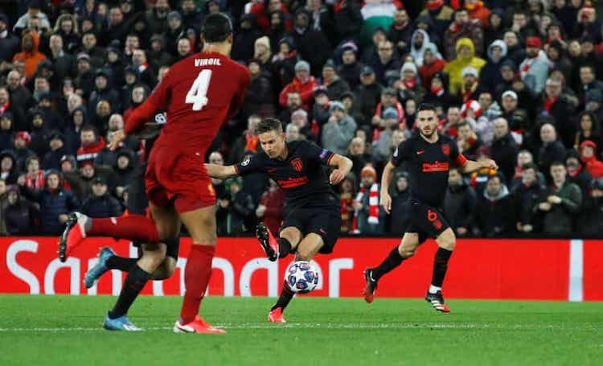

Ban tổ chức La Liga thông báo hôm nay 12/3 rằng các trận đấu trong hai tuần tới bị hoãn, vì nguy cơ Covid-19.

Thông báo từ La Liga được đưa ra chỉ vài tiếng sau khi Real Madrid tuyên bố cách ly toàn bộ đội một.
"Một cầu thủ đội bóng rổ Real Madrid xét nghiệm dương tính với nCoV", trang chủ Real thông báo chiều 12/3. "Toàn đội bóng rổ và bóng đá Real sẽ phải cách ly, vì họ dùng chung trang thiết bị ở khu tập luyện Ciudad Real Madrid. Chúng tôi cũng đóng cửa toàn khu tập luyện, và đề nghị các nhân viên tự cách ly".
Real trở thành đội bóng lớn thứ ba phải cách ly, sau Juventus và Inter. Các trận đấu của họ tại Champions League và Europa League vì vậy cũng không thể diễn ra đúng lịch. Real phải làm khách trên sân của Man City ở lượt về vòng 1/8 Champions League tối 17/3, sau khi thua 1-2 ở lượt đi. Trận Juventus - Lyon ngày 17/3 nhiều khả năng cũng phải hoãn.
La Liga là giải đấu lớn thứ hai bị hoãn vì đại dịch, sau Serie A. Sau 27 vòng, Real đang đứng thứ hai, kém Barca hai điểm. Các đội La Liga sẽ để cầu thủ về nhà tự cách ly trong hai tuần tới.